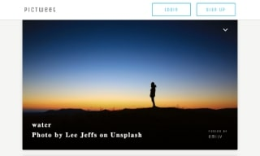
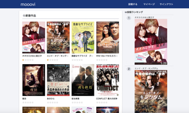

MY WORKS
- 長年オープン・Webシステムにかかわる仕事をしているにもかかわらず、最近はプログラミングの現場から離れていますが、 マネジメント業務職であっても現在に通用する技術・PG知識は必要ということは意識しており、 前々からきちんと体系的にWebアプリケーション作りを学び直したいと考えていました。
- 2019年12月よりWebアプリケーション作りを行うスクールに通い始めて作った成果物を公開しますので、よろしければ御覧ください。
- これらポートフォーリオは私が業務の中で携わってきたWebシステムとは異なるものですが、 Webアプリケーションをゼロから自力で開発するプログラミングレベルを知って頂く目安にはなると思います。

Pictweet
写真共有サイト
webアプリケーションをゼロから構築

Mooovi
映画レビュー投稿サイト
スクレイピングを学習

Profy
一問一答形式による自己紹介サイト
メールによる認証機能を学習
SimpleReader
読書管理サイト
APIを使った外部データ取得を学習
サンプルデータを使って見たい場合は各サイトで以下情報を入力してください。
pwd: password
group (profy): example